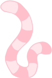
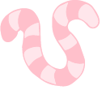

Waarom een wormenhotel? Je leest het goed, de KIT moestuin heeft ook een eigen wormenhotel. Het is ook precies wat je denkt: een hotel voor wormen, maar waarom?

Het hotel is een grote bak waar allemaal wormen in verblijven. Daarin zetten zij GFT-afval om in wormencompost.
Wormencompost is heel geschikt als stekgrond, dus de perfecte voeding voor de planten in de moestuin! Op deze manier verwerkt de KIT moestuin GFT-afval op een hele duurzame manier.